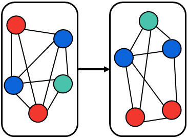
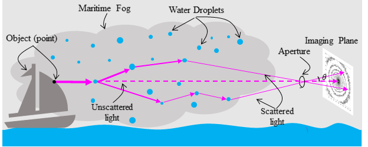
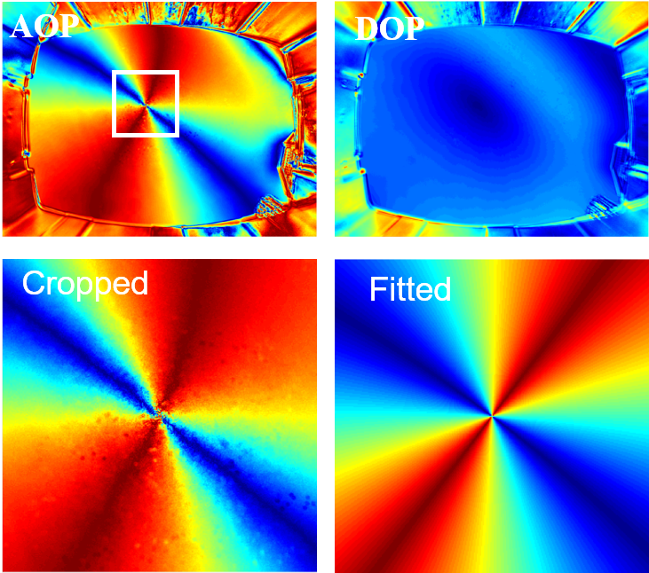
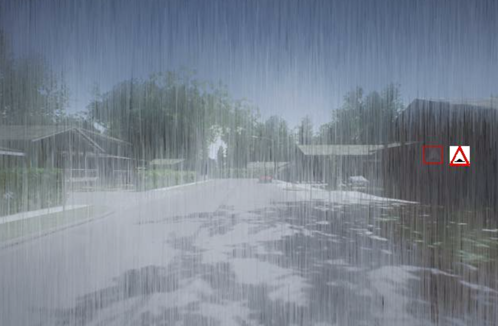

|
Research
My research interests focus on computer vision, computational imaging and optimization. I like to think of how networks could learn effectively from limited visual data and how to achieve "learning to learn". As for imaging side,
I'm interested in projects about inferring physical properties from raw images and incoporating physics into deep learning. BTW, I'm also interested in theoretical study of deep learning though I haven't had a chance to do a relevant project.
|
|

|
(Few-Shot Learning Related)
Weixi Feng*, Muqiao Yang*
In submission, 2019
|
|

|
Scattering through Fog(title has been modified from the original one)
Weixi Feng, Guangyuan Zhao, Achuta Kadambi
Technical Report, 2019
We study scattering and turbulence in maritime fog and propose a new forward model for simulation.
For the inverse problem, we propose a multi-projection fusion algorithm to enhance the defogging effects under dense fog conditions.
|
|

|
Robust and Accurate Underwater GPS via Whole Sky Polarization Model
Guangyuan Zhao, Weixi Feng, Yuxiao Huang
Technical Report, 2018
We introduce a whole sky (includingthe sun) polarization based technique for underwaterGPS, demonstrating the ability to recover sun’s posi-tion from the water
|
|

|
Road Traffic Sign Detection under Bad Weather Conditions
Jiawei Zhang*, Weixi Feng*, Aung Kyaw Min, Hardy Zhu, Wenqi Jia, Xiangjian He
Technical Report, 2017
demo video
We use a modified Faster-rcnn with an additional classifier to achieve accurate traffic sign detection under simulated challenging conditions, including haze, snow, rain, blur etc.
IEEE Video & Image Processing Cup, First Runner-up, 2017
|
Teaching Assistant, ECE102 Systems and Signals, Fall 2019.
Grader, ECE146M Introduction to Machine Learning, Spring 2019.
|
|
{kind=link}